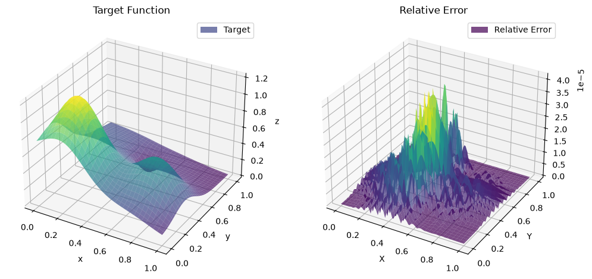

import numpy as np
from utils.fh import MultivariateFloaterHormannInterpolator
import matplotlib.pyplot as plt
##############################
# 関数を設定
##############################
def f(x,y):
"""
Domain: [0,1] x [0,1]
Classical Franke's function
"""
term1 = 0.75 * np.exp(-( (9*x - 2)**2 / 4 ) - ( (9*y - 2)**2 / 4 ))
term2 = 0.75 * np.exp(-( (9*x + 1)**2 / 49 ) - ( (9*y + 1) / 10 ))
term3 = 0.5 * np.exp(-( (9*x - 7)**2 / 4 ) - ( (9*y - 3)**2 / 4 ))
term4 = -0.2 * np.exp(-( (9*x - 4)**2 ) - ( (9*y - 7)**2 ))
return term1 + term2 + term3 + term4
x_bounds = [0.0,1.0] # 定義域の設定
x_min, x_max = x_bounds[0],x_bounds[1] # 範囲の端点
y_bounds = [0.0,1.0] # 定義域の設定
y_min, y_max = y_bounds[0],y_bounds[1] # 範囲の端点
# ==========================================
# 補間点の設定
# ==========================================
def get_nodes(a,b,n,is_chebyshev = True):
"""[a, b] 区間に n 個の補間点を生成する"""
if is_chebyshev: # チェビシェフ点
nodes = np.cos(np.pi * np.arange(n) / (n - 1))
return np.sort(0.5 * (a + b) + 0.5 * (b - a) * nodes), "Chebyshev"
else: # 等間隔点
return np.linspace(a,b,n), "Equidistant"
Nx = Ny = 25
x_nodes, _ = get_nodes(x_min, x_max, Nx, is_chebyshev=True)
y_nodes, _ = get_nodes(y_min, y_max, Ny, is_chebyshev=True)
X_nodes, Y_nodes = np.meshgrid(x_nodes, y_nodes, indexing='ij')# meshgridを作成
points = (x_nodes, y_nodes)
f_node_values = f(X_nodes,Y_nodes)
# ==========================================
# 補間
# ==========================================
d = (5,5)
r = MultivariateFloaterHormannInterpolator(points, f_node_values, d)
#########################
# 誤差解析
#########################
n_eval = 101
x_eval = np.linspace(x_min, x_max, n_eval)
y_eval = np.linspace(y_min, y_max, n_eval)
X_eval, Y_eval = np.meshgrid(x_eval, y_eval, indexing='ij')
f_eval = f(X_eval, Y_eval) # 真の値
r_eval = r((X_eval, Y_eval)) # 近似値(tupleで指定)
abs_err = np.abs(f_eval - r_eval)
max_abs_err = np.max(abs_err)
max_f_eval = np.max(f_eval)
rel_err = abs_err / max_f_eval
max_rel_err = max_abs_err / max_f_eval
print(f"nodes: Nx x Ny ={Nx} x {Ny} = {Nx * Ny}, {_}")
print(f"d = {d}")
print(f"最大相対誤差:{max_rel_err}")
# ==========================================
# 5. 3Dプロットによる可視化
# ==========================================
import matplotlib.pyplot as plt
from matplotlib import cm
fig = plt.figure(figsize=(12, 8))
ax1= fig.add_subplot(121, projection='3d')
# 補間された曲面を描画
surf_target = ax1.plot_surface(X_eval, Y_eval, f_eval, cmap=cm.viridis,
alpha=0.7, antialiased=True, label='Target')
ax1.set_title('Target Function')
ax1.set_xlabel('x')
ax1.set_ylabel('y')
ax1.set_zlabel('z')
# カラーバーの追加
# fig.colorbar(surf_target, ax=ax1, shrink=0.5, aspect=10)
ax1.legend()
ax2= fig.add_subplot(122, projection='3d')
surf2 = ax2.plot_surface(X_eval, Y_eval, rel_err, cmap="viridis",alpha=0.7, antialiased=True, label='Relative Error')
ax2.set_title('Relative Error')
ax2.set_xlabel('X')
ax2.set_ylabel('Y')
ax2.legend()
plt.show()nodes: Nx x Ny =25 x 25 = 625, Chebyshev
d = (5, 5)
最大相対誤差:4.145202225159576e-05